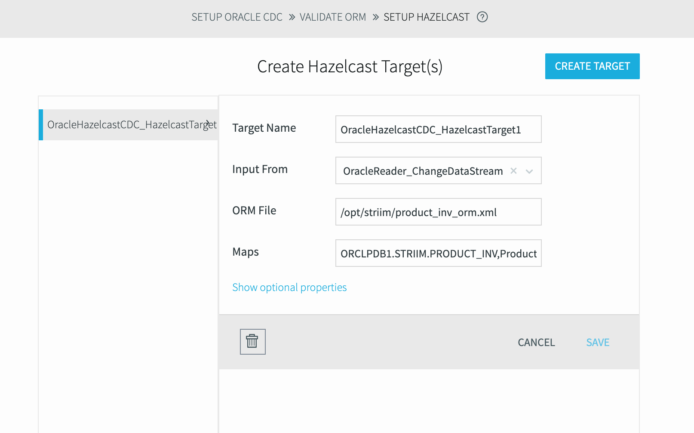
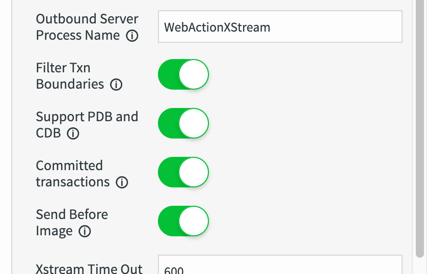

See something wrong? Edit this page.
Configuring Oracle Database CDC connection on Striim dashboard
-
To create new app, select
Start with TemplatethenOracle CDC to Hazelcast:
Use
OracleHazelcastCDCor another name as anApplication Name. -
Enter your Oracle DB data and credentials: image::oracle_reader_1.png[DB Connection Creds] image::oracle_reader_2.png[DB Connection Control]
-
localhostorIP address of oracledb containerdoes not work forConnection URLso you need to use your HOST IP address. -
As you can see above, service section of
Connection URLis configured as a/orclpdb1.localdomain, not as:ORCLCDB. If you configure service as a:ORCLCDB,STRIIMapplication orC##STRIIMcommon user can not reach/listPRODUCT_INVtable which is underSTRIIMlocal user because ofCDB specificbug at Striim template itself. We will update these infos with the correct ones before deploy the application. By the way, we have already contacted with them and reported this issue. They will provide to fix at future releases. If you use Oracle DB without CDB, you are not affect bt this issue.
-
-
Select source table: image::oracle_reader_3.png[Source Table]
Configuring Hazelcast Writer on Striim dashboard
-
Put ORM file location(
/opt/striim/product_inv_orm.xml) and Hazelcast cluster infos:
-
Check ORM mapping details:

-
Choose related
DataStreamfromInput Fromdropdown and saveTarget:
Apply OracleReader changes and Deploy&Run the CDC application
-
After all configuration steps finally your CDC applications is created. Before deploy and create application, as mentioned at
Configuring Oracle Database CDC connection on Striim dashboardsection, you need to updateConnection URLandTablessection like this to run CDC application without any issue:
-
As a final step, go to enable OracleReader’s
Support PDB and CDBoption: -
Deploy and Run CDC application: